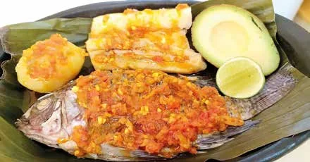
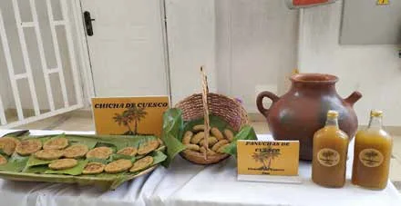
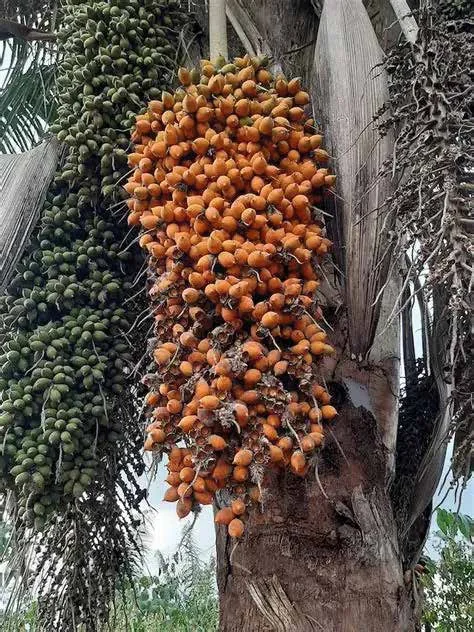

Pescado de río
El pescado hace parte de la alimentación tradicional junto al Magdalena. Se sirve con hogao, aguacate y limón.
Chicha de cuesco: receta y fermentación
La base de la alimentación Pijao es el maíz, la yuca y el plátano, acompañados de arroz, verduras, pescado y huevos. Entre las bebidas, la chicha ocupa un lugar especial: se comparte en espacios colectivos y el Plan de Vida del pueblo la usa como metáfora de la relación con el territorio.
La protagonista de esta página es la chicha de cuesco, hecha con el fruto de una palma que crece en el valle del Magdalena.

El cuesco es el fruto de la palma Attalea butyracea, conocida en el centro de Colombia como palma de vino o palma de cuesco. Puede alcanzar 25 metros de altura y crece en zonas cálidas, hasta los 1.000 metros de altitud.
De su fruto maduro se extrae la pulpa con la que se preparan chicha, vino, cucas, mermeladas, arequipe y yogur. Hoy, grupos de mujeres del bosque seco tropical trabajan para que las nuevas generaciones no pierdan esta cocina.

Estos son los ingredientes tradicionales. Marca los que ya tienes.
Cinco pasos, de la selección del fruto al colado.
Se escogen los cuescos más maduros y sanos. Con ayuda de una piedra o un cuchillo se retira la cáscara dura exterior para dejar al descubierto la pulpa carnosa.
Se llevan los frutos a un pilón de madera o a un mortero de piedra y se machacan con fuerza hasta que la pulpa se desprenda y quede macerada.
En una olla grande, tradicionalmente de barro o de aluminio pesado, se hierve la pulpa macerada junto con el agua a fuego medio. Se revuelve constantemente hasta que la pulpa se deshaga y el caldo espese.
45 a 60 minutosCon el caldo todavía caliente y fuera del fuego, se agrega la panela rallada o troceada. Se mezcla bien hasta que se disuelva por completo y dé un tono acaramelado.
Se pasa toda la mezcla por un colador de lienzo o un cedazo tupido para separar la chicha líquida de las fibras duras y los residuos del corozo.
Se vierte la preparación en una vasija o tinaja de barro cocido, se tapa con un paño limpio y se deja reposar en un rincón fresco y oscuro. El tiempo cambia el carácter de la chicha.
Refrescante y suave. Es la que se toma cuando se quiere un sabor frutal, con poca fermentación.
Fermentación baja
Más ácida y fermentada. Es la chicha tradicional de fiesta y de trabajo de campo.
Fermentación alta
La chicha que fermenta varios días contiene alcohol. Consúmela con responsabilidad y solo si eres mayor de edad.
La mesa tolimense es amplia. Estos tres platos acompañan muy bien la chicha.

El pescado hace parte de la alimentación tradicional junto al Magdalena. Se sirve con hogao, aguacate y limón.
Cerdo relleno con arroz y arvejas, cocinado lentamente en horno de leña. Es el plato de fiesta más reconocido del departamento.
Masa de maíz con carnes, arroz, arveja y huevo, envuelta en hoja de plátano y cocida al vapor. Es el desayuno típico de los domingos.